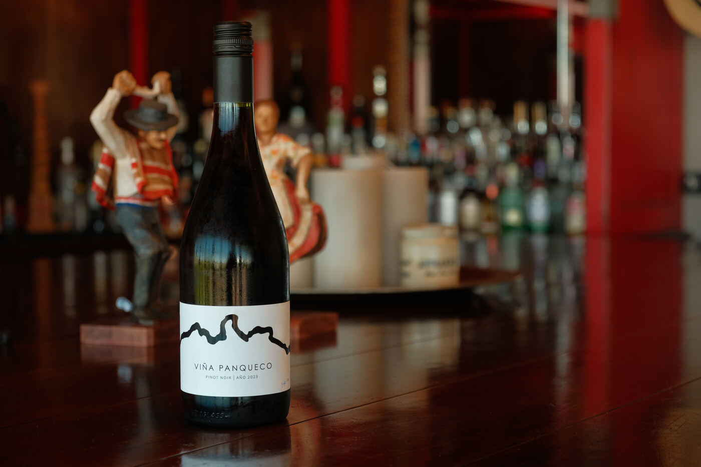
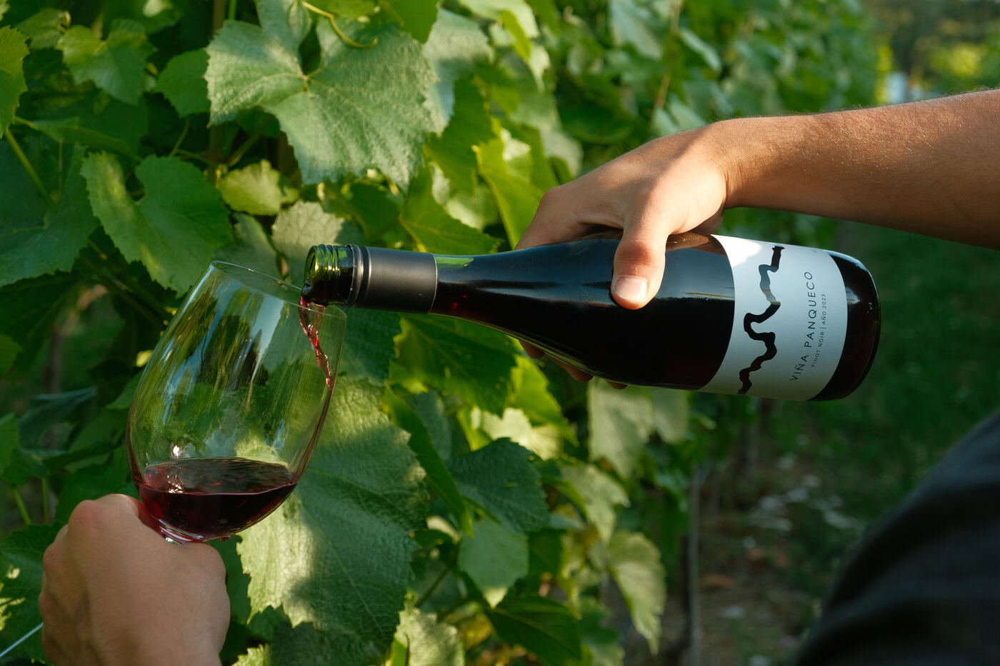

Etiqueta de Vino Viña Panqueco
Ubicada a orillas del río Bueno, en la Región de Los Lagos, la viña requería una etiqueta minimalista que hiciera alusión directa a su cercanía con el afluente.


Ubicada a orillas del río Bueno, en la Región de Los Lagos, la viña requería una etiqueta minimalista que hiciera alusión directa a su cercanía con el afluente.